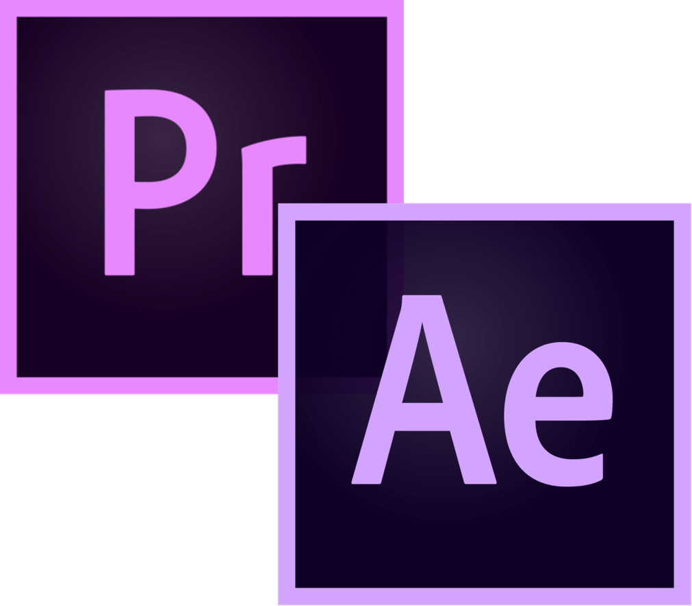

ABOUT ME
Hello, I'm MUHAMAD HAIZI IZZUDIN, also known as HAIZI, originally from Klang, Selangor. Growing up, my family and siblings were my constant support and inspiration.
Today, I'm based in Sepang, where I'm deeply passionate about computer programming, computer maintenance, and videography. When I'm not coding, you'll find me behind my mind, curiosing around technology.
In my free time, I indulge in Computer and Server Maintenance, drawing inspiration for my computing and creative projects. My dream is to educate people the essence of computing, pushing boundaries and innovating.
Looking ahead, I envision a fast and easy computing, powered by AI, as I strive to make a positive impact on the world through my sharing and work. Explore my portfolio to see what I'm all about and let's connect to create something amazing together!
QUALITIES
As usual, i always focus on QUALITY over quantity. Expect my digital work to be very neat and clean, and very detail-critical. Below is my expertise:
|
Programming: Python |
|
|
Programming: Java |
|
 |
Scripting: Bash, PowerShell |
 |
Web Dev: HTML, CSS, Javascript |
 |
Dev Ops: VMs, Cloud Computing, Containers |
 |
General Videography and Adobe Videography Suite |